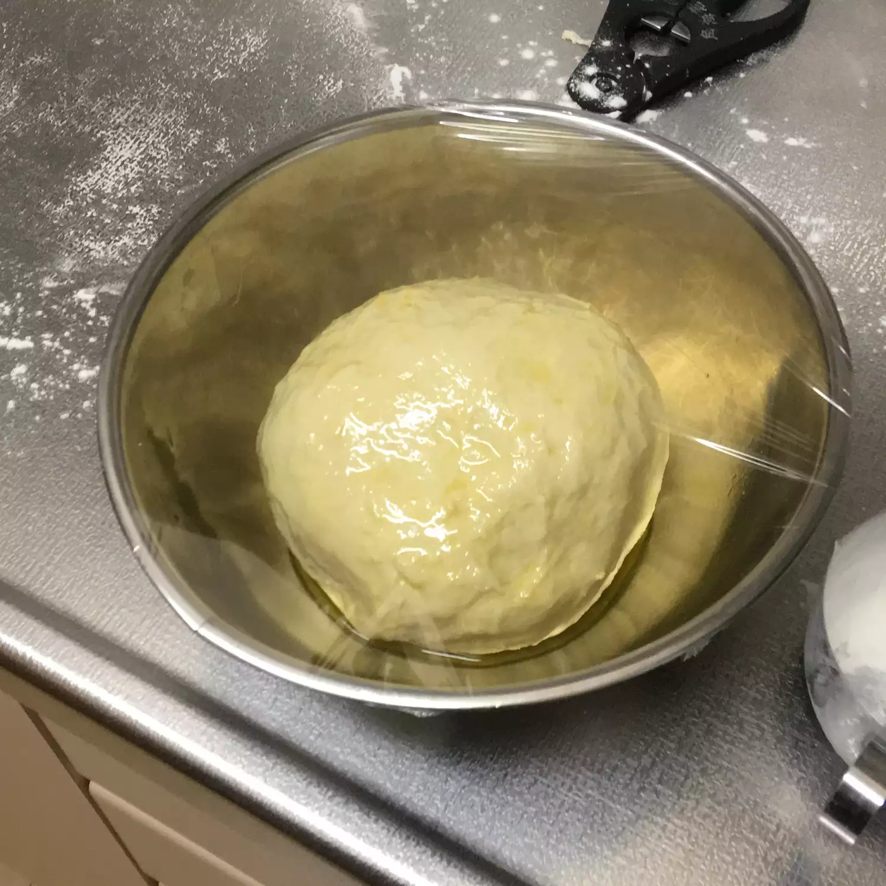

Calzone

Perfect Every Time Pizza or Calzone Dough
This calzone pizza dough is ready in a snap; my kids love it! My dear chef friend Darrin Gleason shared this recipe with me over ten years ago while attending college. It has been a go-to recipe for my family for all these years, and I thought I should share it with my cooking community.
- Water
- Milk
- Flower
- Honey
- Tomato Paste
Passos
Passo 1
- Mix together 1/2 cup lukewarm water and yeast in a small bowl. Let stand until foamy, about 5 minutes.
Passo 2
- Mix together 1/2 cup lukewarm water and yeast in a small bowl. Let stand until foamy, about 5 minutes.
Passo 3
- Mix together 1/2 cup lukewarm water and yeast in a small bowl. Let stand until foamy, about 5 minutes.
Passo 4
- Mix together 1/2 cup lukewarm water and yeast in a small bowl. Let stand until foamy, about 5 minutes.
Homepage